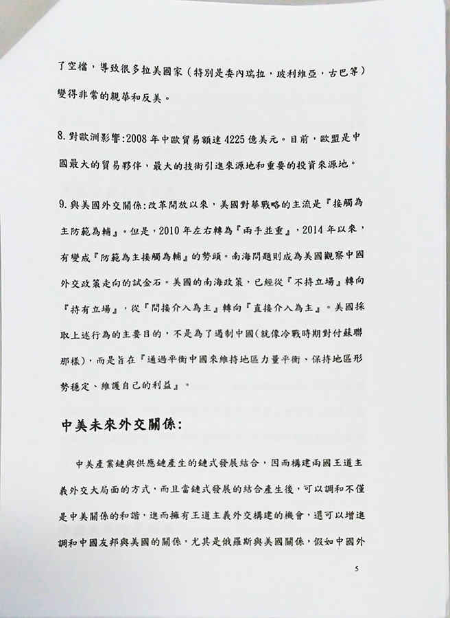

<html lang="en"></html><head><meta charset="UTF-8"/><title>EEweb</title><link rel="stylesheet" type="text/css" href="./semantic-ui/semantic.css"/><link rel="stylesheet" type="text/css" href="./asset/stylesheets/reset.css"/><link rel="stylesheet" href="./asset/stylesheets/paper.css"/></head><body><div id="navbar" class="ui stackable menu container"><a href="./home.html" class="active item">EEWEB</a><a href="./home.html" class="item"><i class="home icon"></i>HOME</a><a href="./intro.html" class="item"><i class="empty star icon"></i>INTRO</a><a href="./library.html" class="item"><i class="book icon"></i>LIBRARY</a><a href="./record.html" class="item"><i class="history icon"></i>RECORDS</a></div><br/><div class="ui container"><div class="ui four stackable cards"><div class="card red"><div class="content"><div class="header">中國崛起對於世界之影響及未來外交趨勢方向</div></div><a class="image"></a><div class="content"><div class="meta"><span class="right floated time">1/11</span><span class="category">小組作業 /陳冠宇,王榮伸,屈任之,喻浚哲,郭俊廷,張佑銘,胡元,</span></div></div><div data-img="./asset/images/paper05/chinaRise_1.jpg" data-msg="陳冠宇,王榮伸,屈任之,喻浚哲,郭俊廷,張佑銘,胡元,1/11" class="ui bottom attached button pop"><i class="print icon"></i>      放大檢視</div></div><div class="card red"><div class="content"><div class="header">中國崛起對於世界之影響及未來外交趨勢方向</div></div><a class="image"></a><div class="content"><div class="meta"><span class="right floated time">2/11</span><span class="category">小組作業 /陳冠宇,王榮伸,屈任之,喻浚哲,郭俊廷,張佑銘,胡元,</span></div></div><div data-img="./asset/images/paper05/chinaRise_2.jpg" data-msg="陳冠宇,王榮伸,屈任之,喻浚哲,郭俊廷,張佑銘,胡元,2/11" class="ui bottom attached button pop"><i class="print icon"></i>      放大檢視</div></div><div class="card red"><div class="content"><div class="header">中國崛起對於世界之影響及未來外交趨勢方向</div></div><a class="image"></a><div class="content"><div class="meta"><span class="right floated time">3/11</span><span class="category">小組作業 /陳冠宇,王榮伸,屈任之,喻浚哲,郭俊廷,張佑銘,胡元,</span></div></div><div data-img="./asset/images/paper05/chinaRise_3.jpg" data-msg="陳冠宇,王榮伸,屈任之,喻浚哲,郭俊廷,張佑銘,胡元,3/11" class="ui bottom attached button pop"><i class="print icon"></i>      放大檢視</div></div><div class="card red"><div class="content"><div class="header">中國崛起對於世界之影響及未來外交趨勢方向</div></div><a class="image"></a><div class="content"><div class="meta"><span class="right floated time">4/11</span><span class="category">小組作業 /陳冠宇,王榮伸,屈任之,喻浚哲,郭俊廷,張佑銘,胡元,</span></div></div><div data-img="./asset/images/paper05/chinaRise_4.jpg" data-msg="陳冠宇,王榮伸,屈任之,喻浚哲,郭俊廷,張佑銘,胡元,4/11" class="ui bottom attached button pop"><i class="print icon"></i>      放大檢視</div></div><div class="card red"><div class="content"><div class="header">中國崛起對於世界之影響及未來外交趨勢方向</div></div><a class="image"></a><div class="content"><div class="meta"><span class="right floated time">5/11</span><span class="category">小組作業 /陳冠宇,王榮伸,屈任之,喻浚哲,郭俊廷,張佑銘,胡元,</span></div></div><div data-img="./asset/images/paper05/chinaRise_5.jpg" data-msg="陳冠宇,王榮伸,屈任之,喻浚哲,郭俊廷,張佑銘,胡元,5/11" class="ui bottom attached button pop"><i class="print icon"></i>      放大檢視</div></div><div class="card red"><div class="content"><div class="header">中國崛起對於世界之影響及未來外交趨勢方向</div></div><a class="image"></a><div class="content"><div class="meta"><span class="right floated time">6/11</span><span class="category">小組作業 /陳冠宇,王榮伸,屈任之,喻浚哲,郭俊廷,張佑銘,胡元,</span></div></div><div data-img="./asset/images/paper05/chinaRise_6.jpg" data-msg="陳冠宇,王榮伸,屈任之,喻浚哲,郭俊廷,張佑銘,胡元,6/11" class="ui bottom attached button pop"><i class="print icon"></i>      放大檢視</div></div><div class="card red"><div class="content"><div class="header">中國崛起對於世界之影響及未來外交趨勢方向</div></div><a class="image"></a><div class="content"><div class="meta"><span class="right floated time">7/11</span><span class="category">小組作業 /陳冠宇,王榮伸,屈任之,喻浚哲,郭俊廷,張佑銘,胡元,</span></div></div><div data-img="./asset/images/paper05/chinaRise_7.jpg" data-msg="陳冠宇,王榮伸,屈任之,喻浚哲,郭俊廷,張佑銘,胡元,7/11" class="ui bottom attached button pop"><i class="print icon"></i>      放大檢視</div></div><div class="card red"><div class="content"><div class="header">中國崛起對於世界之影響及未來外交趨勢方向</div></div><a class="image"></a><div class="content"><div class="meta"><span class="right floated time">8/11</span><span class="category">小組作業 /陳冠宇,王榮伸,屈任之,喻浚哲,郭俊廷,張佑銘,胡元,</span></div></div><div data-img="./asset/images/paper05/chinaRise_8.jpg" data-msg="陳冠宇,王榮伸,屈任之,喻浚哲,郭俊廷,張佑銘,胡元,8/11" class="ui bottom attached button pop"><i class="print icon"></i>      放大檢視</div></div><div class="card red"><div class="content"><div class="header">中國崛起對於世界之影響及未來外交趨勢方向</div></div><a class="image"></a><div class="content"><div class="meta"><span class="right floated time">9/11</span><span class="category">小組作業 /陳冠宇,王榮伸,屈任之,喻浚哲,郭俊廷,張佑銘,胡元,</span></div></div><div data-img="./asset/images/paper05/chinaRise_9.jpg" data-msg="陳冠宇,王榮伸,屈任之,喻浚哲,郭俊廷,張佑銘,胡元,9/11" class="ui bottom attached button pop"><i class="print icon"></i>      放大檢視</div></div><div class="card red"><div class="content"><div class="header">中國崛起對於世界之影響及未來外交趨勢方向</div></div><a class="image"></a><div class="content"><div class="meta"><span class="right floated time">10/11</span><span class="category">小組作業 /陳冠宇,王榮伸,屈任之,喻浚哲,郭俊廷,張佑銘,胡元,</span></div></div><div data-img="./asset/images/paper05/chinaRise_10.jpg" data-msg="陳冠宇,王榮伸,屈任之,喻浚哲,郭俊廷,張佑銘,胡元,10/11" class="ui bottom attached button pop"><i class="print icon"></i>      放大檢視</div></div><div class="card red"><div class="content"><div class="header">中國崛起對於世界之影響及未來外交趨勢方向</div></div><a class="image"></a><div class="content"><div class="meta"><span class="right floated time">11/11</span><span class="category">小組作業 /陳冠宇,王榮伸,屈任之,喻浚哲,郭俊廷,張佑銘,胡元,</span></div></div><div data-img="./asset/images/paper05/chinaRise_11.jpg" data-msg="陳冠宇,王榮伸,屈任之,喻浚哲,郭俊廷,張佑銘,胡元,11/11" class="ui bottom attached button pop"><i class="print icon"></i>      放大檢視</div></div></div></div><br/><br/><style>a.footer.footer{
	float: left;
	margin-right: 20px;
	color: black;
}
h4.ui.header.top{
	border-bottom: 1px solid #d7d7d7;
}</style><div class="ui vertical footer segment"><div class="ui container"><div class="ui grid"><div class="three wide column"><h4 class="ui header top">Teacher Info</h4><h4 class="ui header"><a href="#" class="footer item"><i class="mail icon"></i><div class="content"><div class="header">Mail</div></div></a><a href="https://www.facebook.com/people/%E6%B4%AA%E4%BA%8E%E8%91%89/100003976970131" class="footer item"><i class="Facebook icon"></i><div class="content"><div class="header">Facebook</div></div></a></h4></div><div class="six wide column"><h4 class="ui header top">Link</h4><h4 class="ui header"><a href="http://www.oit.edu.tw/bin/home.php" class="footer item"><i class="Student icon"></i><div class="content"><div class="header">亞東技術學院</div><div class="description">通識教育中心</div></div></a><a href="http://gecw.oit.edu.tw/bin/home.php" class="footer item"><i class="Student icon"></i><div class="content"><div class="header">Oriental Institute of Technology</div><div class="description">Center for General Education</div></div></a></h4></div><div class="seven wide column"><h4 class="ui header top">School Info</h4><h4 class="ui header"><a class="footer item"><i class="Marker icon"></i><div class="content"><div class="header">Address</div><div class="description">新北市板橋區四川路二段58號</div></div></a><a class="footer item"><i class="Phone icon"></i><div class="content"><div class="header">Tel</div><div class="description">7738-8000 or 7738-0145</div></div></a></h4></div></div></div><br/></div><script src="https://code.jquery.com/jquery-2.1.4.min.js"></script><script src="./semantic-ui/semantic.js"></script><script src="./asset/javascripts/paper.js"></script></body>